◆ MISSÃO CONCLUÍDA ◆
Leaf Pallet
Plataforma que reúne recursos, tutoriais e componentes prontos para ajudar designers de UI iniciantes a aprender e evoluir na carreira.
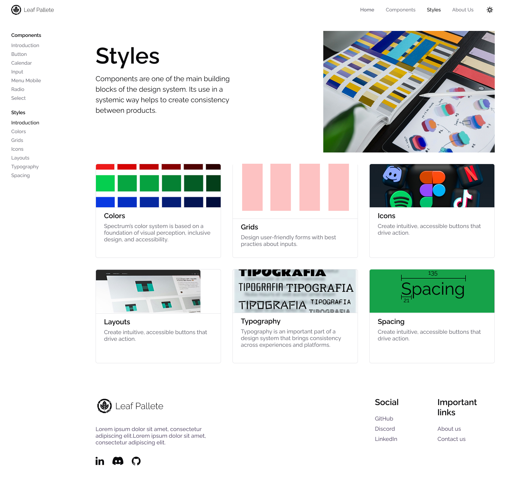
O Problema
Designers de UI, especialmente aqueles que estão começando, enfrentam diversos desafios ao tentar se aprofundar nas melhores práticas do design. Muitos desses profissionais lutam para encontrar recursos acessíveis e de qualidade, já que a maior parte do material disponível para aprendizado é caro ou difícil de acessar. Além disso, a falta de feedback construtivo adequado pode dificultar o crescimento e a evolução das habilidades de design.
Outro grande obstáculo é a ausência de uma plataforma centralizada que reúna todos os materiais e recursos necessários, como guias de estilo, componentes de design, estudos de caso e exemplos práticos. Essa fragmentação impede que os designers, especialmente os iniciantes, tenham acesso a tudo o que precisam para aprender e aplicar os conceitos de design de forma eficiente.
Além disso, a falta de um ambiente colaborativo onde os designers possam trocar ideias, tirar dúvidas e receber críticas construtivas de outros profissionais é um fator que contribui para a frustração de muitos. A prática, muitas vezes, é isolada, sem uma rede de apoio para os iniciantes.
Por fim, muitos novos designers de UI sentem que os métodos tradicionais de aprendizado não são eficazes o suficiente, já que o design de interfaces exige uma prática constante e uma interpretação crítica de tendências e melhores práticas.
Designers iniciantes
Que precisam de orientação prática para evoluir nas suas carreiras.
Profissionais
Que enfrentam dificuldades para melhorar seus portfólios e habilidades.
Empresas
E equipes de design que buscam um padrão consistente de boas práticas.
Por que isso acontece
Recursos inadequados
Designers muitas vezes não conseguem encontrar recursos adequados e acessíveis.
Falta de feedback
A falta de feedback contínuo e interações colaborativas dificulta o aprimoramento das habilidades.
Ausência de centralização
A ausência de uma plataforma centralizada torna mais difícil o desenvolvimento de um portfólio sólido.
O Leaf Pallet oferece uma solução completa que facilita a aprendizagem de design UI de forma acessível e prática, com recursos educativos, tutoriais e componentes de design prontos para ajudar designers em todos os estágios de suas carreiras.
Pesquisa com os Usuários
Os dados coletados a partir da pesquisa com designers iniciantes revelaram padrões de comportamento, desafios e necessidades que influenciam diretamente a experiência deles ao aprender e aplicar design de UI. Essas informações foram cruciais para moldar a funcionalidade e os recursos do Leaf Palette, criando uma plataforma focada em fornecer soluções práticas e acessíveis.
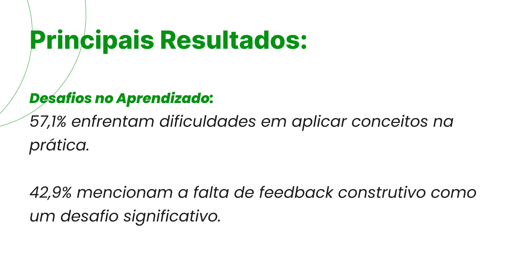
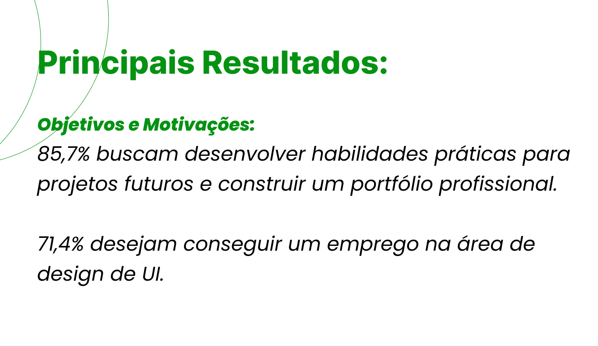
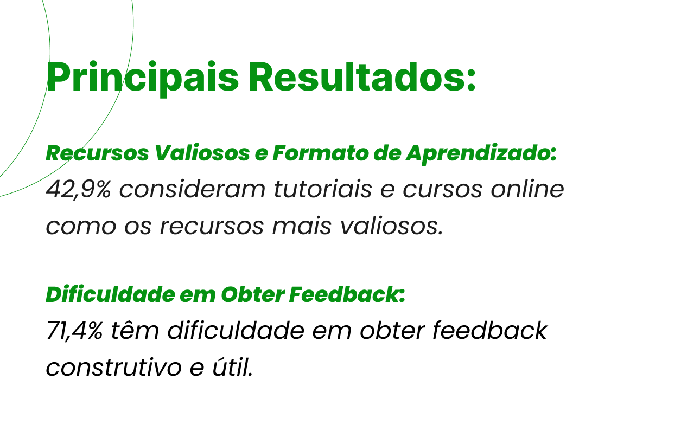
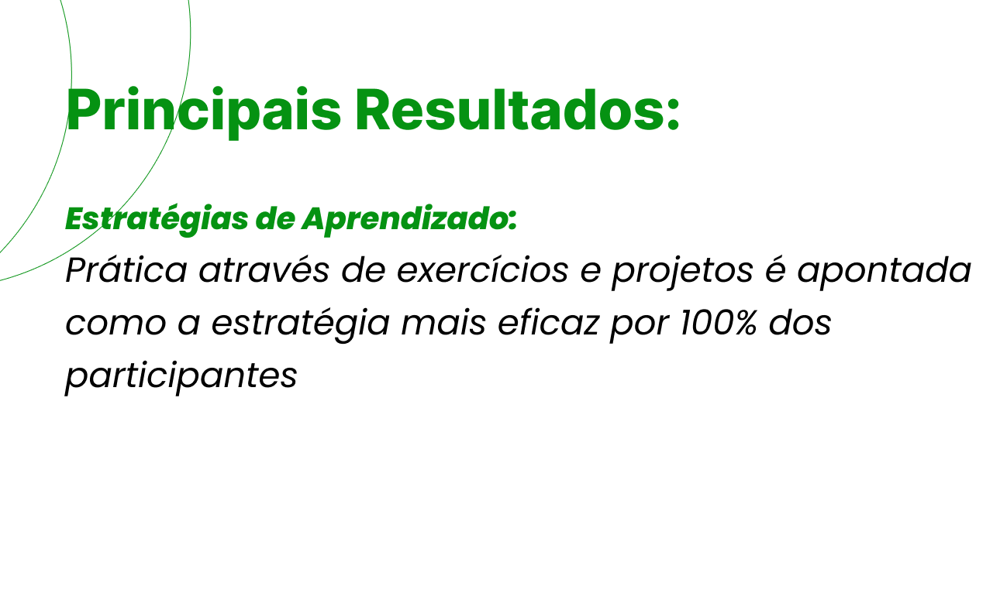
Personas
Tendo como base os principais achados da pesquisa, desenvolvemos personas representativas dos nossos usuários-alvo (designers iniciantes e em transição de carreira), o que nos ajudou a criar uma solução personalizada e empática. Além das personas, também mapeamos a jornada desses usuários, destacando os principais pontos de interação, desafios e oportunidades.
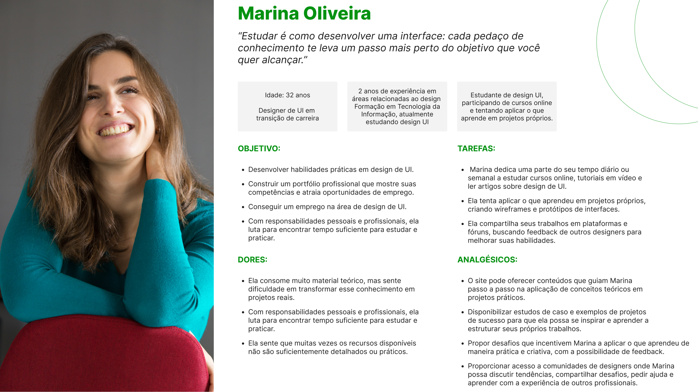
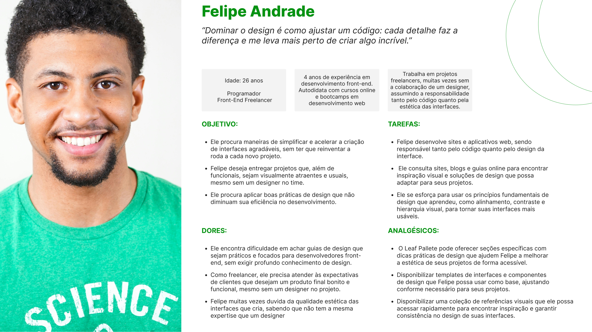
Benchmarking
A partir das ideias de solução priorizadas, realizamos um benchmarking competitivo para entender melhor o mercado de design de UI e identificar lacunas e diferenciais que poderíamos oferecer no Leaf Palette.
Analisamos algumas das principais plataformas e sistemas de design que já existem no mercado, como o Suitcase Design System, Human Interface Guidelines da Apple, e Material Design, para entender suas funcionalidades, interfaces e como elas atendem às necessidades de designers e desenvolvedores.
Decisão estratégica
Como muitos dos participantes da pesquisa utilizam mais o celular, decidimos começar com um aplicativo mobile, priorizando a experiência em dispositivos móveis para facilitar o acesso contínuo à plataforma, mesmo em movimento.
Principais insights
Necessidade de recursos práticos · Acesso limitado a feedback de qualidade · Oportunidade para ambiente colaborativo
Design System
O Design System foi criado para garantir uma aparência e funcionamento consistentes em toda a plataforma. Ele inclui elementos como a identidade visual, tipografia, botões, espaçamento e grids, todos aplicados de forma padronizada. Isso ajuda a criar uma experiência de usuário mais fluida e sem interrupções.
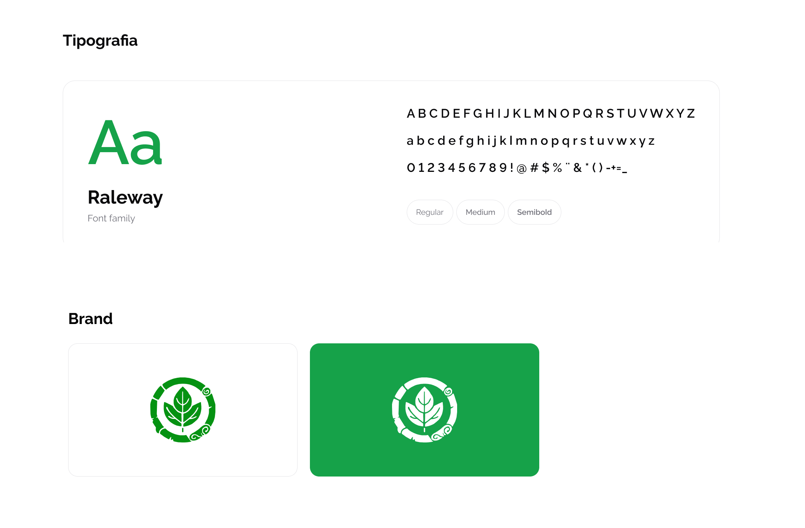
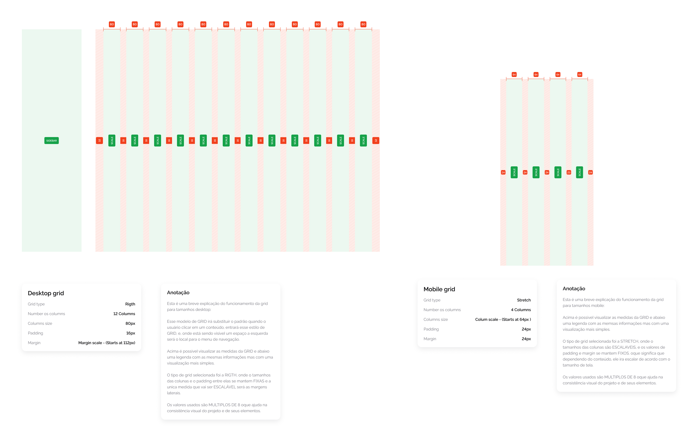
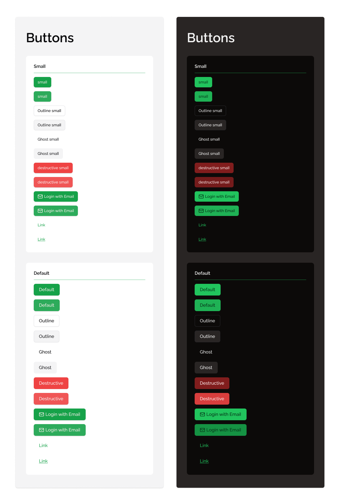
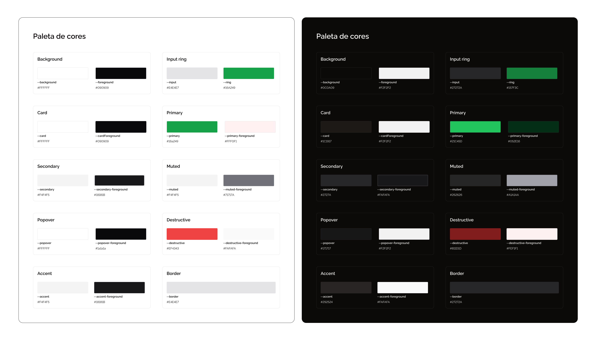
Wireframes
Criar o wireframe foi uma etapa essencial para definir como o Leaf Pallet seria organizado e como os usuários interagiriam com a plataforma. O objetivo foi garantir uma navegação fácil e uma experiência intuitiva tanto na versão desktop quanto na versão mobile.
Para o desktop, o wireframe aproveita o espaço maior da tela, organizando as seções de forma clara e prática. Já na versão mobile, o layout foi ajustado para se adaptar a telas menores, mantendo todos os elementos essenciais e uma navegação simples com menus hambúrguer e botões bem visíveis.
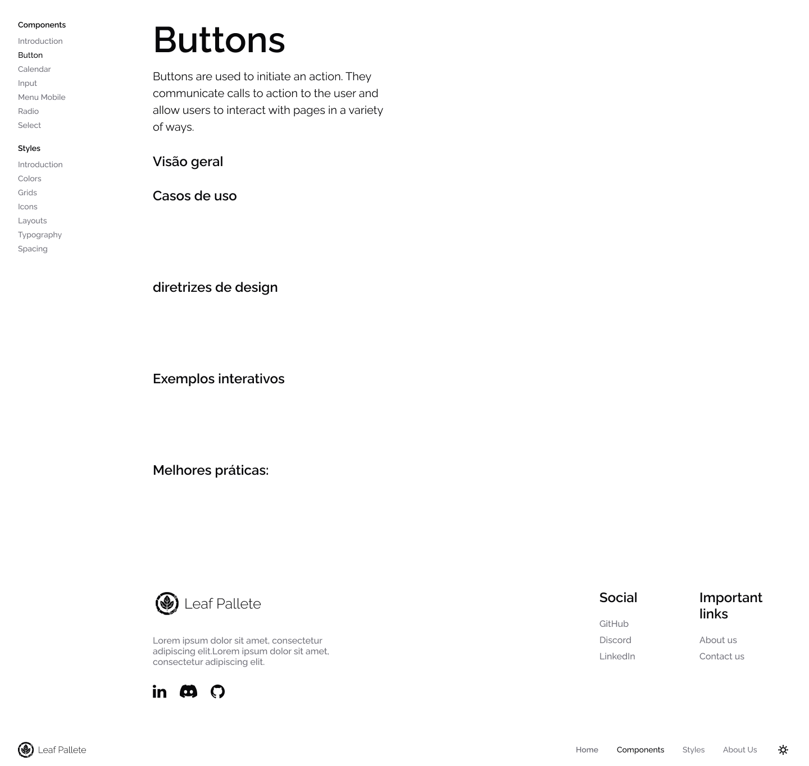
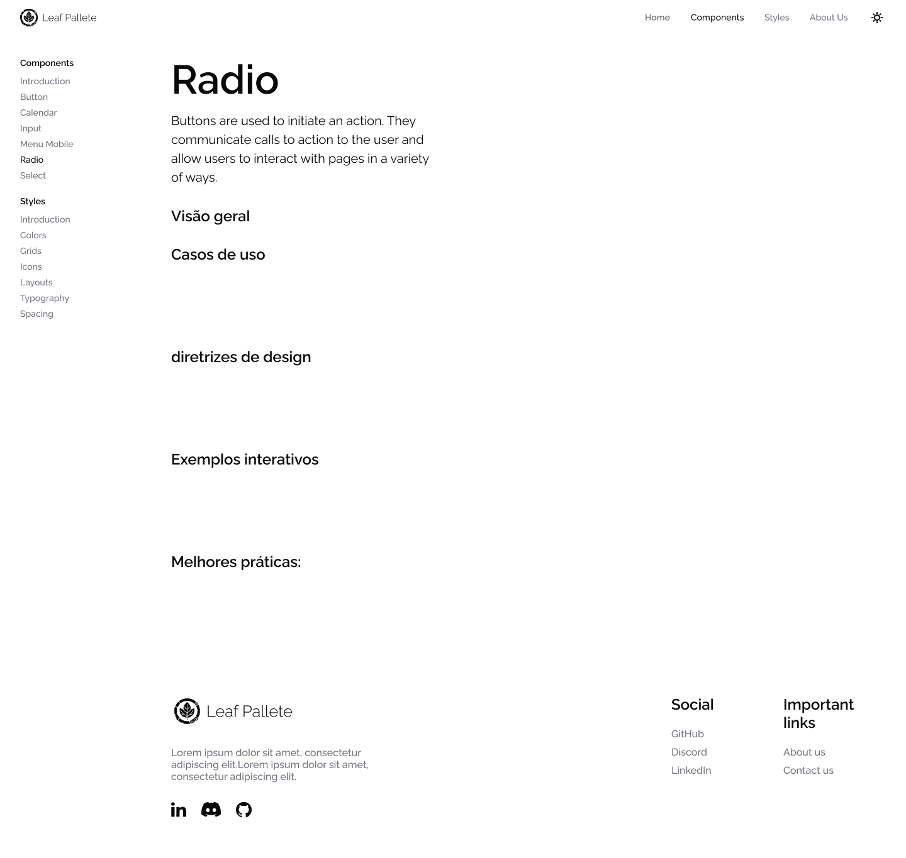
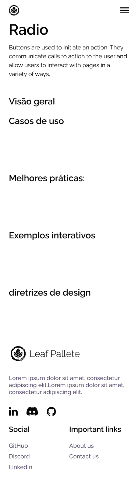
Protótipo de Alta Fidelidade
Os protótipos de alta fidelidade representam a visão final do Leaf Palette, incorporando todos os elementos visuais, interações e componentes que fazem parte da experiência do usuário.
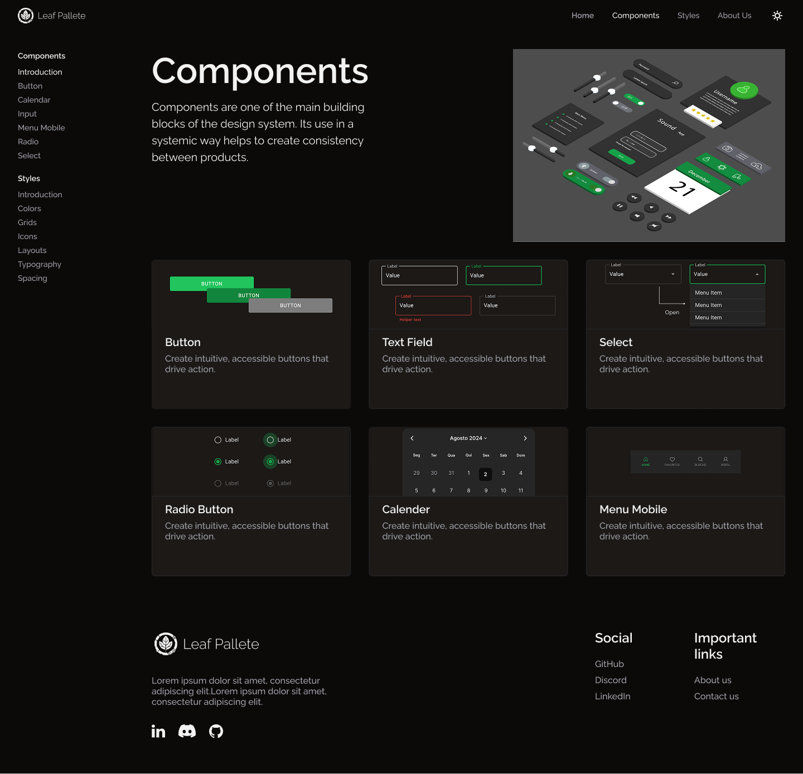
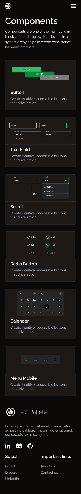
Conclusão
O Leaf Pallet foi criado para ser uma plataforma acessível, prática e colaborativa para designers de UI que estão começando ou em transição de carreira. Baseado em pesquisas com usuários e em um Design System robusto, estamos criando uma solução que traz recursos educativos, componentes de design reutilizáveis e um ambiente para feedback contínuo.
O projeto está sendo desenvolvido para resolver os desafios que os usuários enfrentam, oferecendo ferramentas e recursos que tornam o aprendizado e a evolução no design de UI mais fáceis. O objetivo do Leaf Pallet é empoderar designers e ajudá-los a criar interfaces mais consistentes, eficientes e impactantes.
Em resumo, o Leaf Pallet está se tornando não só um guia prático para designers de UI, mas também um espaço colaborativo, onde o aprendizado contínuo é incentivado, criando uma comunidade focada em melhorar suas habilidades no design.